Pulpa de fruta 100% natural, congelada y sin aditivos. Del campo a tu producto, con la calidad que exige cada rubro.
Ficha Técnica de ProductoConoce la ficha técnica de cada una de nuestras 12 pulpas de fruta: descripción, composición, vida útil y rendimiento aproximado.
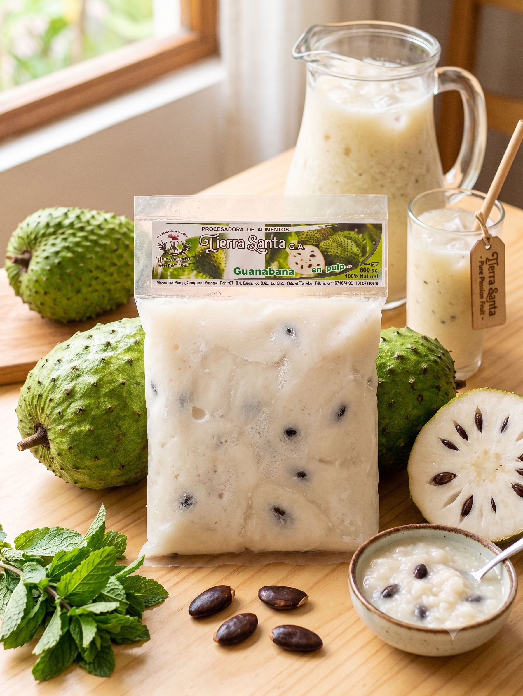
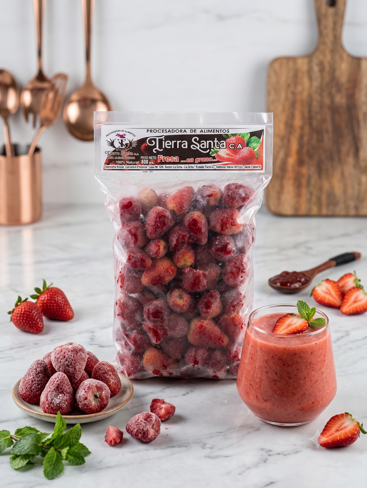
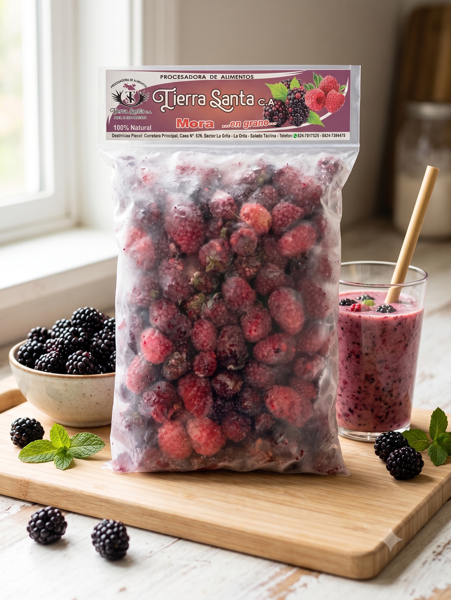
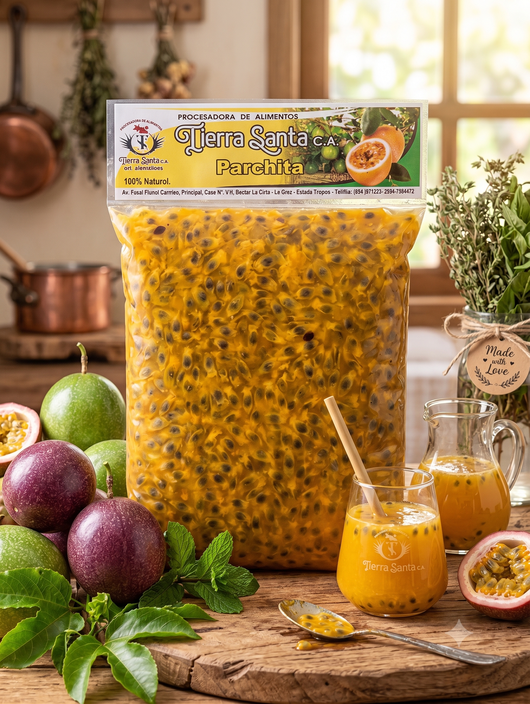
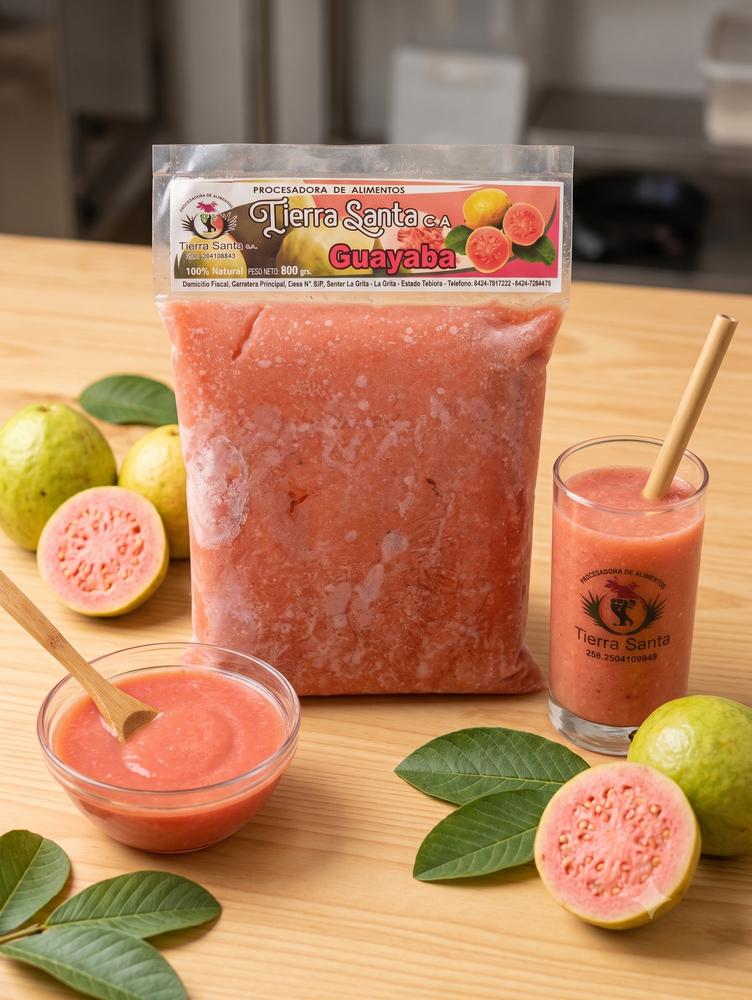
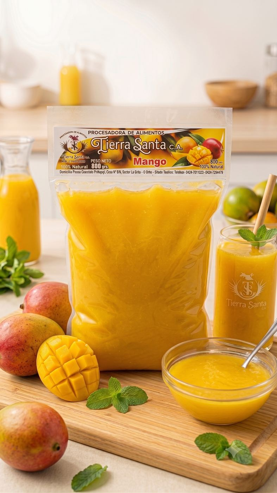
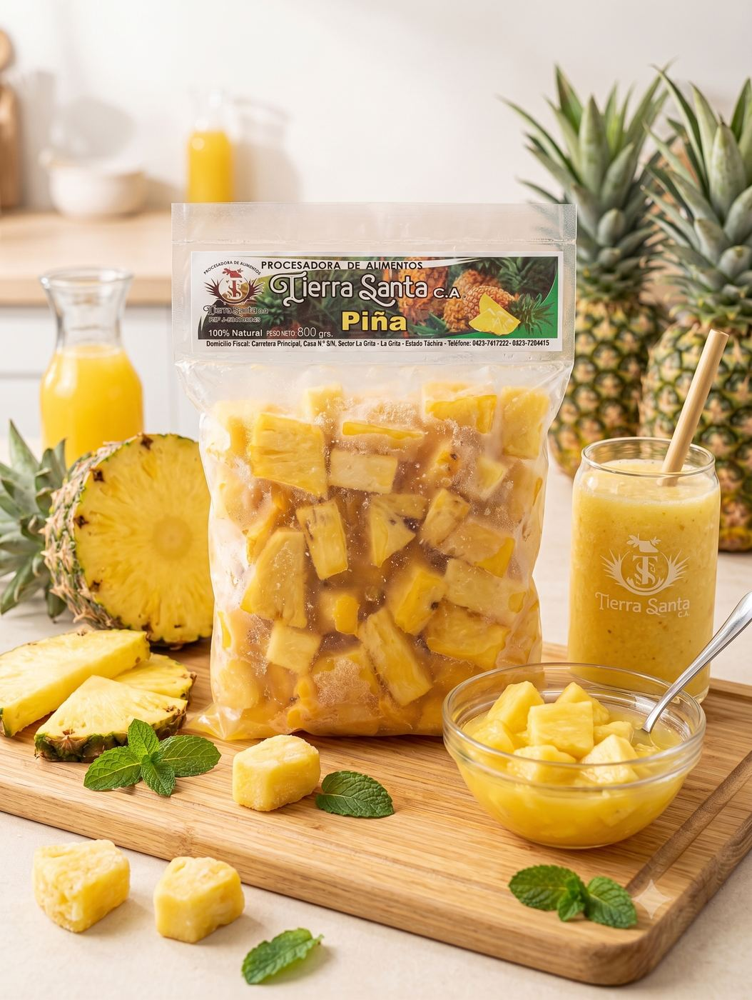
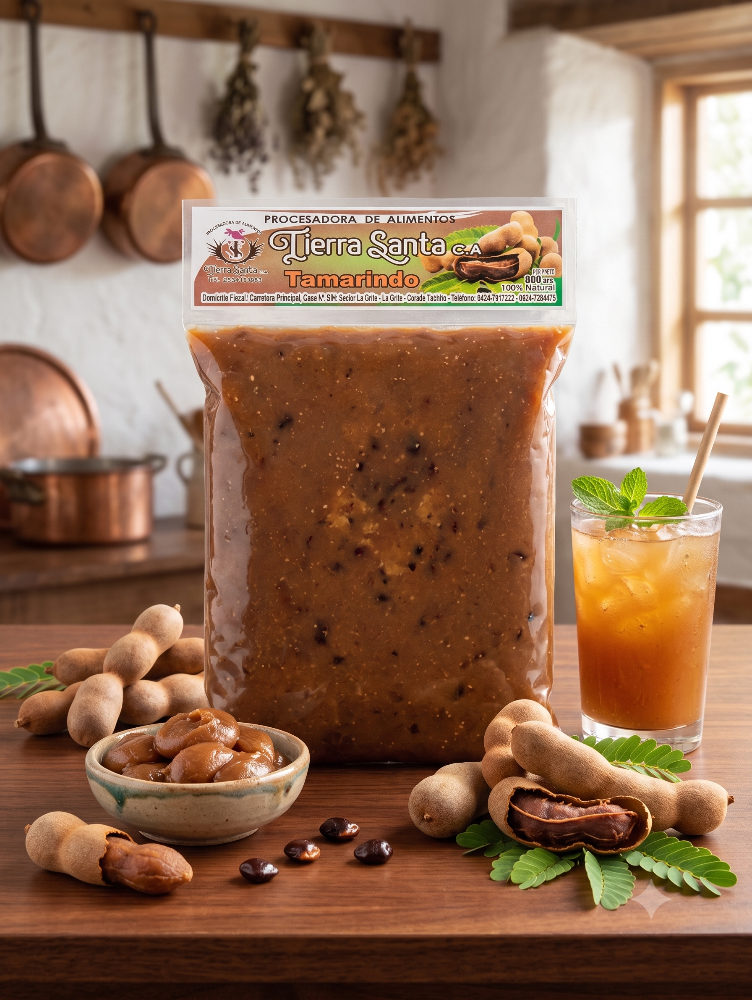
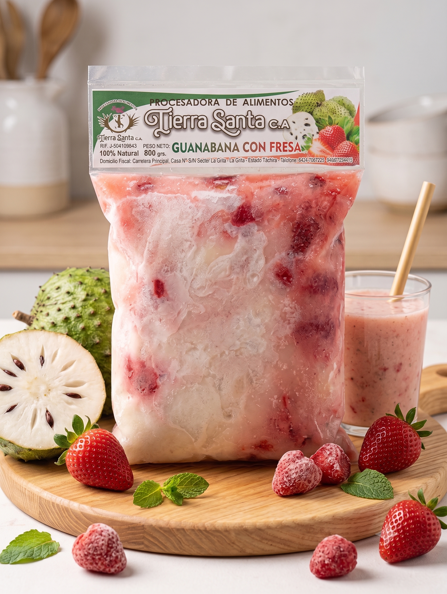
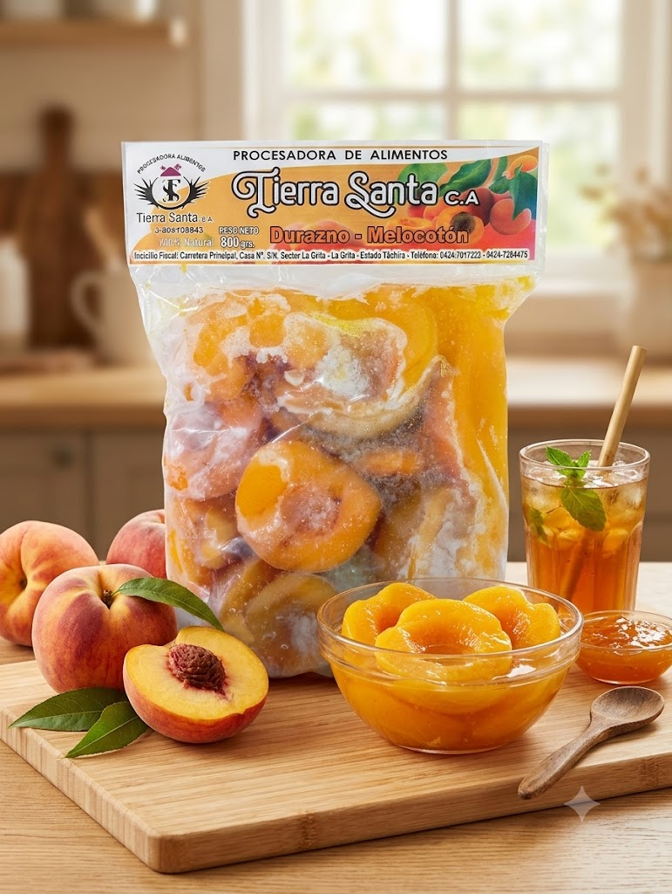
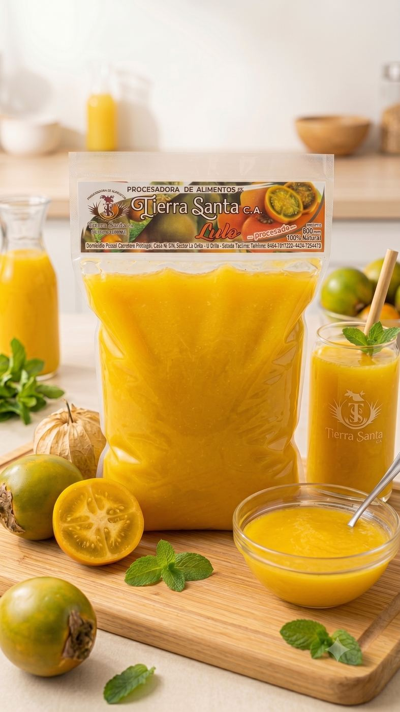